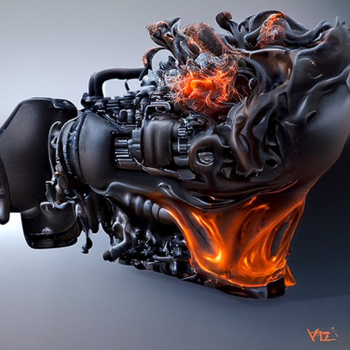

The Engines of Hate spew hellfire, they want to destroy the world and wage war on humankind.
Engines of Hate is a digital art project by DANT, the collection is now available on OpenSea.
This is my first collection of NFT art, and really is just an attempt by me to understand the space and learn how to interact with it.
This is an open ended, generative art project that I intend on adding to over time. I oversee the generative process, making tweaks and changes to evolve the output. Only output that I find aesthetically pleasing will be added to the collection.
Currently, the generative process is using machine learning diffusion models, but this may change or be supplemented with other processes as the project evolves.
I am attempting to add some minimal documentation on the process by using the OpenSea Properties & Stats.
Here are a few Engines that I rejected for the collection, for various reasons, but which are still interesting to consider in the overall scope of the project. I have also created a Tumblr for Engines of Hate Rejections.
